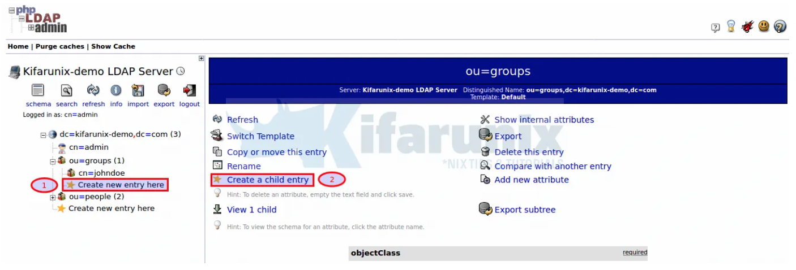

Gestión usuarios LDAP con GUI¶
El acceso gráfico a LDAP se realiza mediante web con el servicio phpLDAPadmin, a continuación se muestra su instalación y configuración:
Instalación phpLDAPadmin¶
- En primer lugar se necesita instalar Apache:
sudo apt-get install apache2
- Seguidamente se debe instalar la herramienta de administración basada en web con el comando:
sudo apt-get install phpldapadmin -y
- Abra el archivo de configuración phpLDAPadmin con el comando:
sudo nano /etc/phpldapadmin/config.php
- Edite las siguientes líneas (asegúrese de cambiar el dominio para que coincida con el suyo y la dirección IP para que coincida con su servidor de alojamiento):
$servers->setValue('server','name','My LDAP Server');
$servers->setValue('server','host','192.168.5.X');
$servers->;setValue('server','base',array('dc=pandora,dc=ldap'));
$servers->setValue('login','auth_type','session');
$servers->setValue('login','bind_id','cn=admin,dc=pandora,dc=ldap');
$servers->setValue('auto_number','min',array('uidNumber'=>10000,'gidNumber'=>10000));
- Deshabilite el sitio predeterminado de Apache con el comando:
sudo a2dissite 000-default.conf
- Reinicie Apache con el comando:
sudo systemctl restart apache2
Acceso phpLDAPadmin¶
- En un navegador web se debe introducir la url: http: // SERVIDOR / phpldapadmin
- Donde SERVER es la dirección IP de su servidor de alojamiento.
- Su nombre de usuario predeterminado (en el formulario cn = admin, dc = dominio, dc = ldap) se completará automáticamente.
- Escriba la contraseña de administrador que creó y haga clic en Autenticar. Debería encontrarse en la página principal de phpLDAPadmin, listo para trabajar:
Warning
- Para la advertencia, simplemente puede reemplazar las llaves ( ) con corchetes en la línea afectada, 1614.
Deprecated: Array and string offset access syntax with curly braces is deprecated in /usr/share/phpldapadmin/lib/functions.php on line 1614*{}``[]
- Haga clic en iniciar sesión para iniciar sesión en su interfaz de usuario web phpLDAPadmin. Como ya definimos el DN de enlace de administrador, simplemente ingrese la contraseña e inicie sesión;
- Tras la autenticación exitosa, se accede en el panel de phpLDAPadmin.

- Ahora puede administrar su servidor LDAP con una interfaz web.
Crear usuario y grupo LDAP en phpLDAPadmin¶
Como ejemplo, se muestra cómo crear un usuario LDAP y su grupo usando phpLDAPadmin.
Crear grupo posixGroup¶
- Para crear un grupo dentro de otro Haga clic en
ou=grupos. Luego haga clic enCreate new entry hereo haga clic enCreate a child entry.

- A continuación, haga clic en la
Generic: Posix Groupplantilla para crear un grupo de usuarios LDAP.

-
Ingrese el nombre del grupo, que en este caso lo configuramos para que sea el mismo que el uid del usuario que vamos a crear.
-
Si desea que otros usuarios formen parte del grupo, seleccione sus nombres de usuario. Haga clic
Create Objectuna vez hecho y confirme los cambios.

Crear usuario posixAccount¶
Una vez que haya creado un grupo de usuarios, proceda a crear la cuenta de usuario. Haga clic en ou=gruposy de manera similar, tiene dos opciones, hacer clic Create new entry hereo hacer clic Create a child entry.
- Seleccione la
Generic: User Accountplantilla para crear el objeto de usuario.
Generar hash de contraseña de usuario;
slappasswd
Nueva contraseña: contraseña Vuelva a ingresar la nueva contraseña: contraseña
{SSHA} vrJOf + / AFD9pdGKo / azGavDfbZ8OGJX1
-
Si necesita verificar si la contraseña coincide con el hash pegado, haga clic en verificar contraseña.
-
Cuando establezca la contraseña, seleccione ssha y pegue el hash anterior como contraseña.
-
Complete los detalles del usuario de manera apropiada como se muestra en la captura de pantalla a continuación;

- Una vez hecho esto, haga clic
Create Objecty confirme los cambios.

- Tenga en cuenta que para poder tener bash entre las opciones de shell, edite la plantilla de creación posixAccount y agregue la opción bash ejecutando el comando;
sed -i '/<value id="\/bin\/tsh">\/bin\/tsh<\/value>/a \\t<value id="/bin/bash">\/bin\/bash<\/value>' /etc/phpldapadmin/templates/creation/posixAccount.xml
Note
- Si tiene la información del usuario en un archivo LDIF, puede importar este archivo haciendo clic en importar en la barra de menú superior del panel izquierdo.
- Para confirmar la creación del usuario en el backend del servidor OpenLDAP puede utilizar el comnado
ldapsearch
Actividades¶
- En este ejercicio se deben utilizar phpLDAPadmin para realizar los siguiente apartados:
- Añade un nuevo grupo y dentro de el un nuevo usuario a la estructura de directorio creada en la práctica superior.
- Crea una contraseña para el usuario.
- Modifica el uid creado de inicio.
- Crea un segundo usuario, dentro de usuarios
- Elimina el segundo usuario creado.